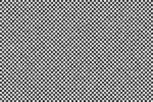
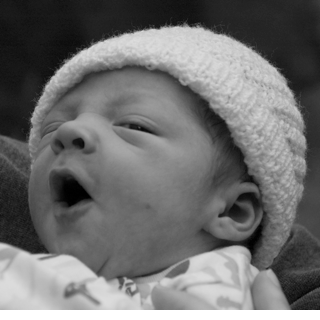

Everything we have done so far has been using images or shapes. It's been fairly high level. However, canvas also gives you direct access to the pixels if you want it. You can get the pixels for an entire canvas or just a portion, manipulate those pixels, then set them back. This lets you do all sorts of interesting effects.
Generative Textures
Let's suppose we'd like to generate a checkerboard texture. This texture will be 300 x 200 pixels.
//create a new 300 x 300 pixel buffer
var data = c.createImageData(300,200);
//loop over every pixel
for(var x=0; x<data.width; x++) {
for(var y=0; y<data.height; y++) {
var val = 0;
var horz = (Math.floor(x/4) % 2 == 0); //loop every 4 pixels
var vert = (Math.floor(y/4) % 2 == 0); // loop every 4 pixels
if( (horz && !vert) || (!horz && vert)) {
val = 255;
} else {
val = 0;
}
var index = (y*data.width+x)*4; //calculate index
data.data[index] = val; // red
data.data[index+1] = val; // green
data.data[index+2] = val; // blue
data.data[index+3] = 255; // force alpha to 100%
}
}
//set the data back
c.putImageData(data,0,0);
Pretty simple. We create a new buffer, loop over the pixels to set the color based on the x and y coordinates, then set the buffer on the canvas. Now you will notice that the even though we are doing two-dimensional graphics, the buffer is just a one dimensional array. We have to calculate the pixel coordinate indexes ourselves.
Canvas data is simply a very long one dimensional array with an integer value for every pixel component. The pixels are made up of red, green, blue, and alpha components, in that order, so to calculate the index of the red component of a particular pixel you would have to calculate the following equation: (y * width + x) * 4. For the pixel 8,10 on a bitmap that is 20 pixels wide it would be (10*20 + 8) * 4. The * 4 is because each pixel has four color components (RGB and the opacity or 'alpha' component). The data object contains the width of the image, so you can write it as (10*data.width + 8)*4. Once you have found the red component you can find the others by incrementing the index, as shown in the code above for the green, blue, and alpha components.
Here is the result of the above code.

Add Noise
Now lets modify this to make it feel a bit more rough. Lets add a bit of noise by randomizing making some of the pixels a slightly different color.
if(val == 0) {
val = Math.random()*100;
} else {
val = 255-Math.random()*100;
}
There. That dirties it up a bit.
Photo Inversion
So that's generating new images with pixel buffers. We can also manipulate existing Canvas data. This means almost any sort of Photoshop filter or adjustment could be done with canvas. For example, suppose you want to invert an image. Inverting is a simple equation. A pixel is composed of RGBA component values, each from 0 to 255. To invert we just subtract each component from 255. Here's what that looks like:

var img = new Image();
img.onload = function() {
//draw the image to the canvas
c.drawImage(img,0,0);
//get the canvas data
var data = c.getImageData(0,0,canvas.width,canvas.height);
//invert each pixel
for(n=0; n<data.width*data.height; n++) {
var index = n*4;
data.data[index] = 255-data.data[index];
data.data[index+1] = 255-data.data[index+1];
data.data[index+2] = 255-data.data[index+2];
//don't touch the alpha
}
//set the data back
c.putImageData(data,0,0);
}
img.src = "baby_original.png";
Notice that we only modify the RGB components. We leave the Alpha alone since we only want to modify color. Here's what it looks like.

Desaturation
Here's another example. It's essentially the same code, just a different equation. This one will turn a color image into black and white.
for(n=0; n<data.width*data.height; n++) {
var index = n*4;
var r = data.data[index];
var g = data.data[index+1];
var b = data.data[index+2];
var v = r*0.21+g*0.71+b*0.07; // weighted average
data.data[index] = v;
data.data[index+1] = v;
data.data[index+2] = v;
//don't touch the alpha
}
Notice that we don't choose a gray value by simply averaging the colors. I turns out our eyes are more sensitive to certain colors than others, so the equation takes that into account by weighting the green more than the other components. Here is the final result.

With pixel buffers you can pretty much draw or manipulate graphics any way you like, the only limitation is speed. Unfortunately manipulating binary data is not one of JavaScript's strong suits, but browsers keep getting faster and faster so some Photoshop style image manipulation is possible today. Later in the tools section I'll show you some libraries that make this sort of thing easier and faster.
Composite Modes
Canvas also supports composite modes. These are similar to some of the blend modes you will find in Photoshop. Every time you draw a shape each pixel will be compared to the existing pixel, then it will calculate the final pixel based on some equation. Normally we are using SrcOver, meaning the source pixel (the one you are drawing) will be drawn over the destination pixel. If your source pixel is partly transparent then the two will be mixed in proportion to the transparency. SrcOver is just one of many blend modes, however. Here's an example of using the lighter mode when drawing overlapping circles. lighter will add the two pixels together, with a maxium value of white.
c.globalCompositeOperation = "lighter"; //set the blend mode
c.fillStyle = "#ff6699"; //fill with a pink
//randomly draw 50 circles
for(var i=0; i<50; i++) {
c.beginPath();
c.arc(
Math.random()*400, // random x
Math.random()*400, // random y
40, // radius
0,Math.PI*2); // full circle
c.closePath();
c.fill();
}
Shadow Effects
Canvas also supports shadows, similiar to CSS. You can set the color, offset and blur radius of the shadow to simulate different effects. This is an example of doing a white glow behind some green text.
c.fillStyle = "black";
c.fillRect(0,0,canvas.width,canvas.height);
c.shadowColor = "white";
c.shadowOffsetX = 0;
c.shadowOffsetY = 0;
c.shadowBlur = 30;
c.font = 'bold 80pt Arial';
c.fillStyle = "#55cc55";
c.fillText("ALIEN",30,200);